Maison intelligente, sans Home Assistant obligatoire
Guide d'utilisation
Tablettes murales, iPhone et ordinateur : toutes les pages, les réglages et les automatismes, pas à pas.
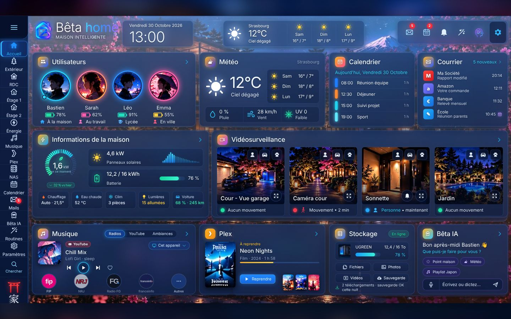
Pour l'installation sur le NAS (Docker), voir le second tutoriel : « Installer Bêta home sur Docker ». Les captures sont prises en mode démonstration : vos pièces, appareils et personnes apparaîtront à la place.
Sommaire
1. Comprendre Bêta home en 2 minutes
2. Le premier démarrage
3. La page d'accueil
4. Pièces, lumières, volets, scènes
5. Chauffage et énergie
6. Sécurité : alarme, caméras, sonnette
7. Automatismes : routines et règles
8. La vie de famille
9. Enfants, invités, baby-sitter
10. Réseau : Bbox et TP-Link Deco
11. Les tablettes murales
12. Tablette debout, iPhone et panneaux des chambres
13. L'iPhone : raccourcis, Siri, notifications
14. Réglages : tout retrouver
15. Modules : activer seulement ce qui vous sert
16. Sauvegarde et mises à jour
17. En cas de souci
1. Comprendre Bêta home en 2 minutes
Les écrans3 tablettes Fire 8″ (Fully Kiosk), l'iPhone, un ordinateur. Ils affichent Bêta home dans le navigateur.
Le serveur Bêta (NAS)Tourne 24 h/24 dans Docker. Il garde les réglages, exécute l'alarme, les règles, le chauffage, les notifications…
Vos appareilsLumières, prises, volets, caméras, Bbox, Deco, voiture… reliés directement (ou via Home Assistant si vous le souhaitez).
Sans serveur, Bêta home fonctionne en mode démonstration (rien n'est piloté pour de vrai).
Avec le serveur, les automatismes continuent même quand toutes les tablettes sont éteintes.
Chaque fonction est un module indépendant : vous pouvez couper le chauffage, l'arrosage, le contrôle parental… sans rien casser d'autre (chapitre 15).
Home Assistant est facultatif : vos appareils peuvent être reliés directement, par Home Assistant, ou un mélange des deux.
2Le premier démarrage
Sur un ordinateur du réseau, ouvrez http://IP-du-NAS:8090 (exemple : http://192.168.1.20:8090).
L'assistant d'accueil demande votre prénom, la ville (Fegersheim) et les membres de la famille.
Allez dans Installation (menu de gauche ou Réglages › Système › Installation et diagnostic). Les 10 étapes s'y cochent au fur et à mesure.
Cliquez sur Relancer dans « Test de toute la maison » : chaque point rouge ou orange explique quoi faire, avec la flèche →.
Installation : à gauche les étapes, à droite le diagnostic complet (serveur, sécurité, Internet, notifications, appareils, tablettes, caméras…). « Copier le rapport » donne un texte à coller si vous demandez de l'aide.
Astuce Le diagnostic signale aussi les conflits : par exemple un même radiateur piloté à la fois par le chauffage et par le conseiller Tempo.
3La page d'accueil
L'accueil s'adapte à l'écran : grille complète sur ordinateur, disposition 8 pouces sur les tablettes, colonne unique sur l'iPhone.
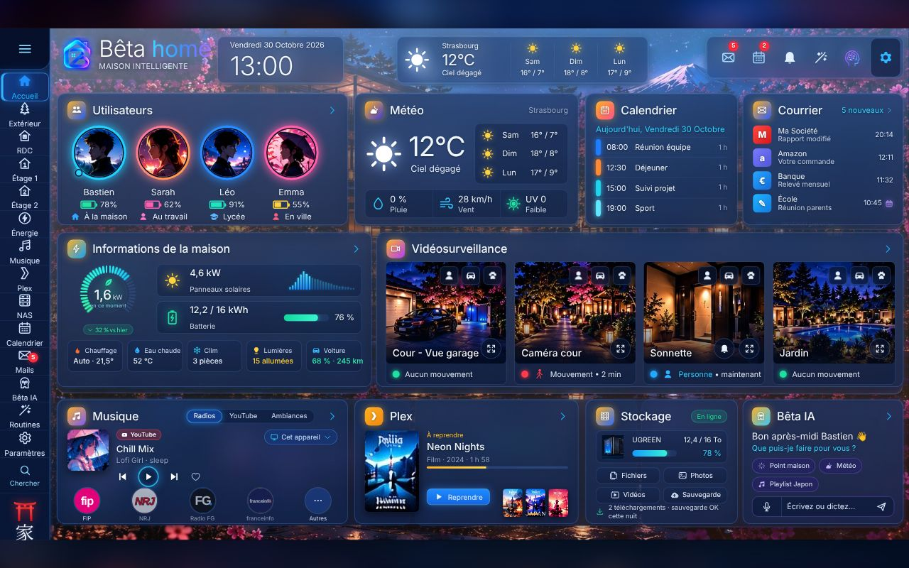
Accueil sur tablette 8″ : personnes, météo de Fegersheim, calendrier, courrier, caméras, musique, NAS et assistant.
En haut : heure, météo, cloches de notifications, bouton des routines rapides, l'assistant Bêta, et la roue des réglages.
Les personnes : batterie du téléphone et position (à la maison, au travail, au lycée…) grâce à OwnTracks.
Toucher une carte ouvre la page complète (Calendrier, Caméras, Musique, NAS…).
Le menu de gauche (ou les onglets du bas sur iPhone) donne accès à toutes les pages ; « Chercher » trouve une page, un appareil ou un réglage.
4Pièces, lumières, volets, scènes
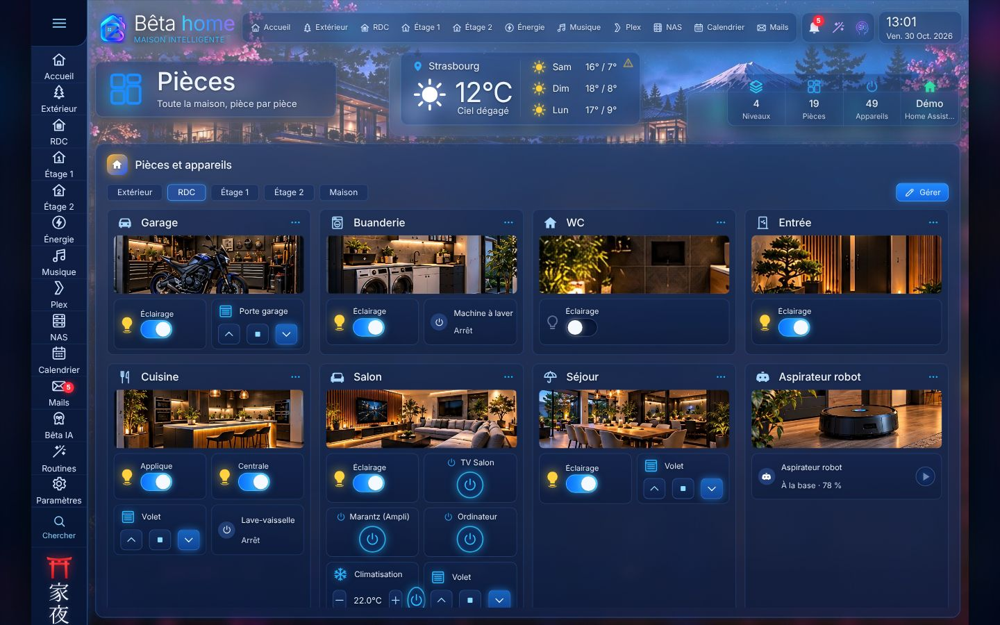
Les pièces, étage par étage : un appui allume/éteint, un appui long ouvre le détail (intensité, couleur, minuterie).
Scènes
Une scène règle plusieurs appareils d'un coup (« Film », « Dîner », « Bonne nuit »). Créez-la dans Scènes › Nouvelle scène : choisissez les appareils et leur état, puis testez-la avec Essayer.
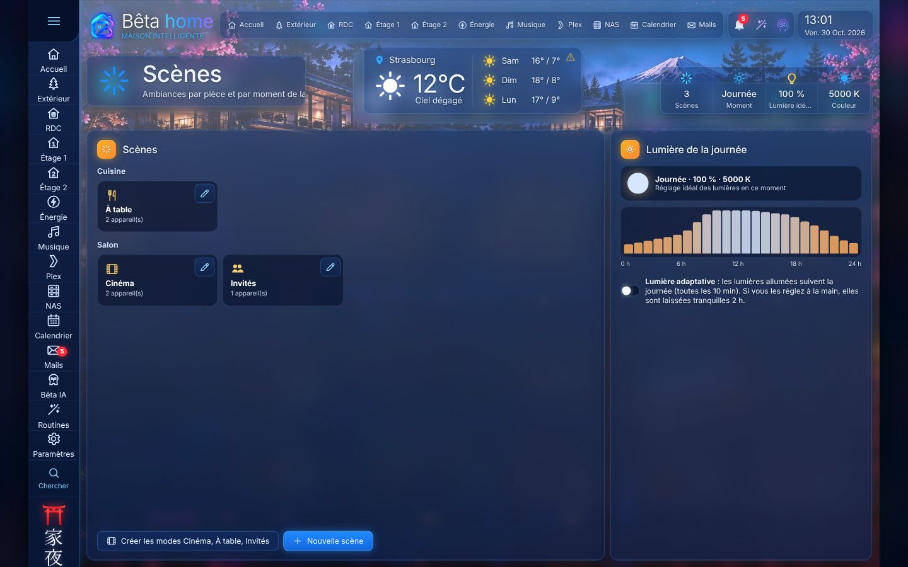
Scènes et « Lumière de la journée » (éclairage adaptatif) : la teinte suit le soleil, du blanc froid le matin au chaud le soir.
Bon à savoir L'éclairage adaptatif ne corrige qu'une lampe qu'on vient d'allumer, ou qu'il a lui-même réglée. Si vous changez la couleur à la main ou lancez une scène, il n'y touche plus jusqu'à la prochaine extinction.
5Chauffage et énergie
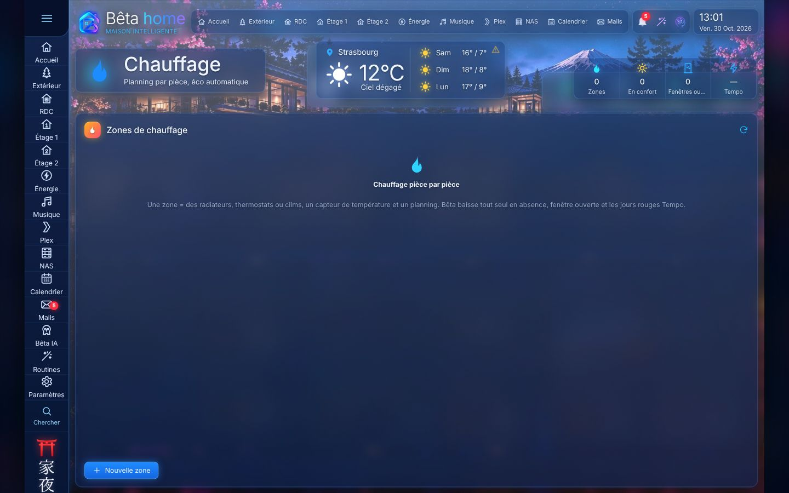
Chauffage : un planning par pièce (confort, éco, hors-gel), coupure automatique quand une fenêtre est ouverte, éco quand tout le monde est parti.
Zones : une zone = une pièce + ses radiateurs ou sa clim + un capteur de température.
Jours Tempo rouges : le chauffage peut baisser d'un degré automatiquement.
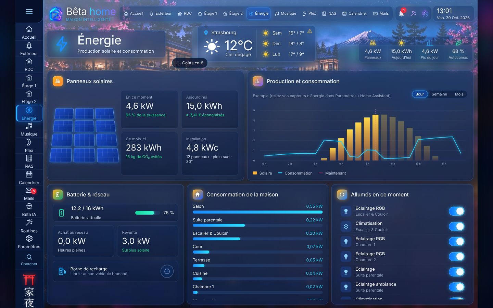
Énergie : consommation en kWh et en euros, production solaire, voiture, et le conseiller Tempo (« lancez la machine maintenant, c'est moins cher »).
Décalage des appareils : dans Réglages › Énergie et confort › Conseiller Tempo, une prise (chauffe-eau, lave-linge) peut être coupée automatiquement pendant les heures rouges. Recharge de la voiture : la borne charge en heures creuses jusqu'au pourcentage voulu pour l'heure de départ.
6Sécurité : alarme, caméras, sonnette
Régler l'alarme
Réglages › Sécurité › Alarme.
Cochez les détecteurs du mode Absence (toute la maison) et du mode Nuit (portes et fenêtres seulement).
Indiquez les portes d'entrée : elles laissent le temps de taper le code (délai d'entrée).
Choisissez les sirènes et lumières à déclencher, puis activez l'alarme.
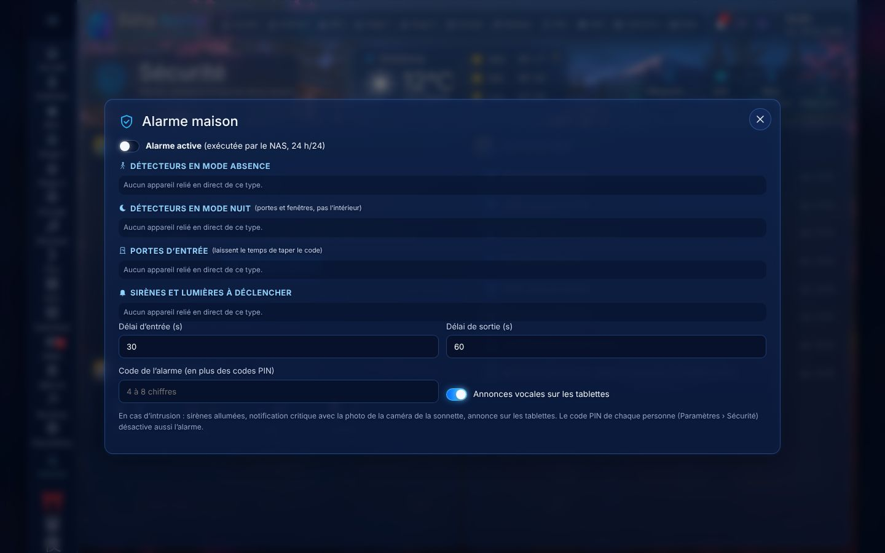
La fenêtre de réglage de l'alarme. Elle est exécutée par le NAS, 24 h/24, même si les tablettes sont éteintes.
Désarmer : code de l'alarme ou code PIN personnel de chacun.
Intrusion : sirènes, notification critique avec la photo de la sonnette, annonce sur les tablettes.
Sonnette : la visite apparaît sur les tablettes et l'iPhone ; « Réponses » envoie un message préenregistré (« Déposez le colis devant la porte »).
Détection caméras (Frigate) : personne, voiture, animal, avec choix des caméras et des heures.
Ne pas déranger Le mode « Ne pas déranger » coupe les notifications ordinaires, mais jamais l'alarme, une fuite d'eau ou la sonnette.
7Automatismes : routines et règles
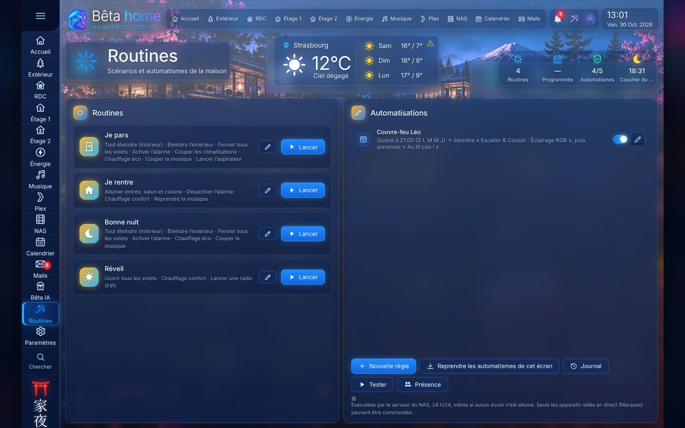
Routines (« Je pars », « Je rentre », « Bonne nuit ») et règles « Si… alors… ».
Une routine
Une liste d'actions lancée d'un bouton, par Siri ou à heure fixe. Exemple « Je pars » : éteindre tout, baisser le chauffage, armer l'alarme en mode Absence.
Une règle « Si… alors… »
Si…
et seulement si…
alors…
la porte d'entrée s'ouvre
il fait nuit
allumer l'entrée 3 minutes
Bastien arrive à la maison
l'alarme est armée
désarmer et allumer le salon
une fuite est détectée
—
couper la vanne, notification critique
Mode test : la règle s'affiche dans le journal sans rien piloter. Idéal pour vérifier avant d'activer.
Journal : chaque déclenchement est expliqué (« pourquoi la lumière s'est allumée ? »).
Modes de la maison : Normal, Absent, Nuit, Vacances, Ne pas déranger.
8La vie de famille
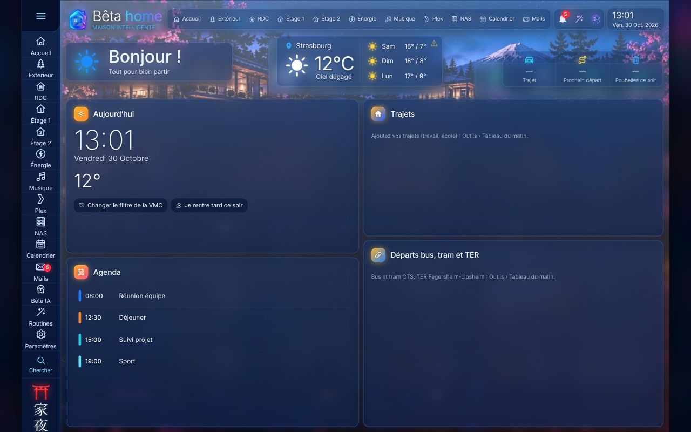
Le tableau du matin : météo, agenda du jour, trafic, bus et tram CTS, trains SNCF, rappels.
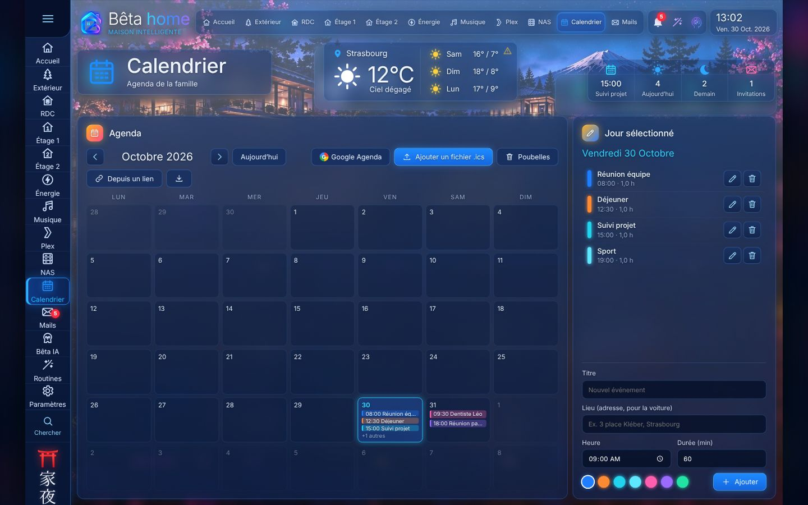
Calendrier : les agendas iCloud de chacun (lien de partage ou CalDAV), en couleur par personne.
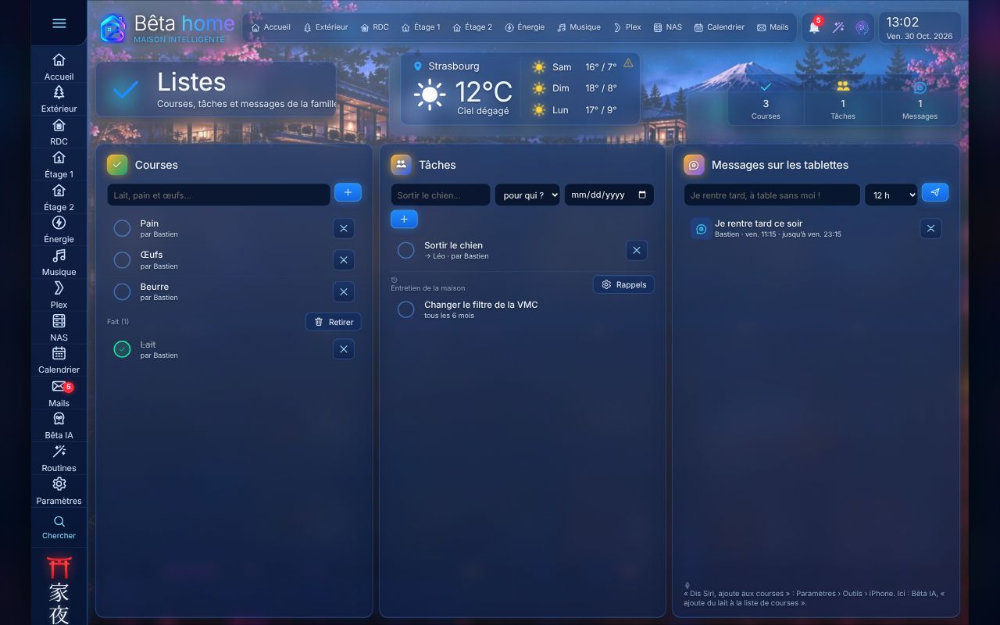
Listes (courses…) et messages du tableau, partagés entre les écrans.
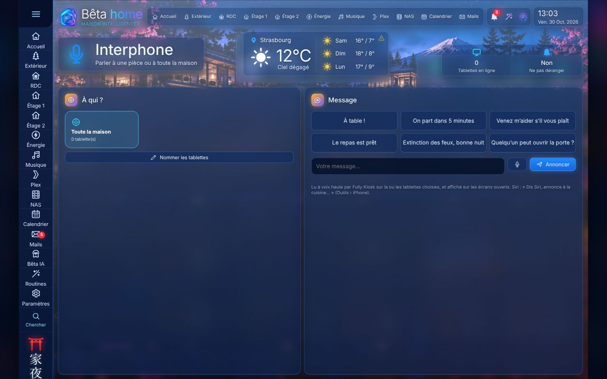
Interphone : parler d'une tablette à l'autre, ou à toutes.
Colis : les numéros de suivi trouvés dans vos e-mails (IMAP) + suivi La Poste.
Rappels de la maison : filtre de la VMC, pile du détecteur, vidange… tous les X mois.
Réveil en douceur : lumières et volets progressifs avant l'heure du réveil.
Mode vacances : chauffage hors-gel, simulation de présence, alarme ; au retour, tout revient comme avant.
« Pendant votre absence » : un résumé de ce qui s'est passé à votre retour ; Bilan : le récapitulatif du mois.
9Enfants, invités, baby-sitter
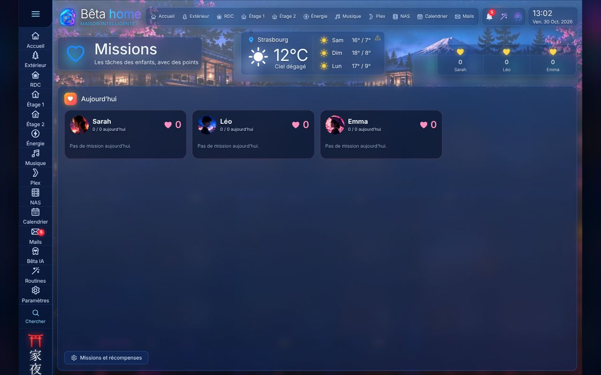
Missions des enfants : tâches cochées sur la tablette, points et récompenses validés par un parent.
Profil
Ce qu'il voit
Ce qu'il ne peut pas faire
Parent (admin)
Tout
—
Enfant
Accueil, sa chambre, musique, missions, listes
Réglages, alarme, réseau, routines avec alarme, bilan
Invité
Lumières des pièces communes, musique, Wi-Fi invités
Sécurité, réglages, journal, connexions
Baby-sitter
Pièces choisies, contacts d'urgence, consignes
Tout le reste ; la sortie du mode demande le code d'un parent
Wi-Fi invités : Réglages › Réseau › Wi-Fi invités affiche un QR code à scanner avec l'appareil photo (le réseau invité de la Bbox s'allume et s'éteint d'un bouton).
10Réseau : Bbox et TP-Link Deco
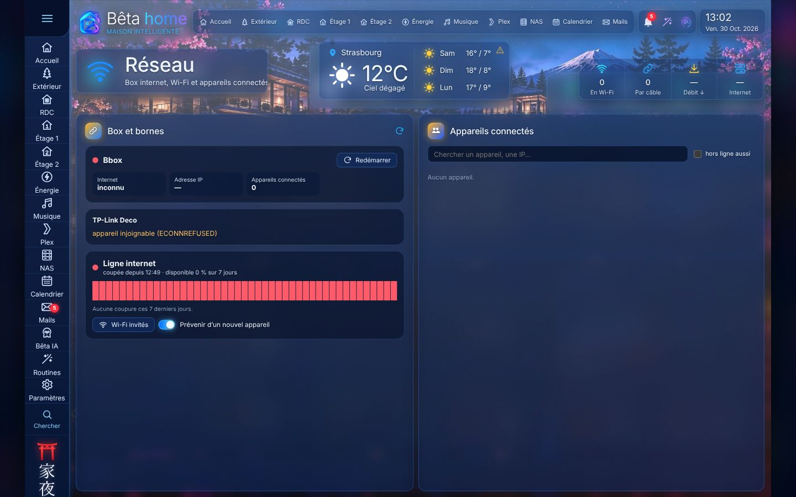
Réseau : état de la Bbox, débit, appareils connectés via les Deco, historique des coupures.
Bbox : reliez-la dans Réglages › Maison › Marques et appareils › Bbox avec le mot de passe administrateur de la box.
TP-Link Deco (mode routeur) : connecteur Deco avec le mot de passe de l'application Deco. Bêta home lit la liste des appareils connectés.
Contrôle parental : vous le gérez dans l'application Deco ; le module « Contrôle parental » de Bêta home est donc désactivé par défaut.
Surveillance : une notification si Internet tombe ou si un appareil inconnu se connecte.
Deco en mode routeur Les appareils Wi-Fi sont derrière les Deco : c'est le Deco, pas la Bbox, qui connaît leurs noms. Reliez donc le Deco pour voir la liste complète.
11Les tablettes murales
Sur chaque Fire 8″, installez Fully Kiosk Browser (voir le tutoriel Docker, étape 9) et ouvrez http://IP-du-NAS:8090.
Sur l'ordinateur : Réglages › Sécurité › Codes PIN, mode sécurisé, écrans › Associer un nouvel écran. Un QR code s'affiche.
Sur la tablette, scannez le QR (ou tapez le code). L'écran reçoit son propre accès, révocable à tout moment.
Sur la tablette : Réglages › Écrans et iPhone › Cet écran : nom (« Cuisine »), disposition, veille, page de départ, grand texte.
Codes PIN, mode sécurisé et association des écrans par QR code. Un écran perdu se retire avec « Retirer ».
Mode performance : activé automatiquement sur les Fire (animations et flous réduits).
Veille : horloge et cadre photo (dossier du NAS ou Immich) ; l'écran s'éteint la nuit.
Commande vocale : dites « Bêta, allume le salon ». À activer par tablette (micro en https ou dans Fully Kiosk).
12Tablette debout, iPhone et panneaux des chambres
Quand une tablette est tenue à la verticale (ou sur l'iPhone), l'accueil se réorganise tout seul en une colonne : tout tient sur l'écran, sans faire défiler. Les autres pages (Pièces, Sécurité, Énergie…) restent exactement les mêmes.
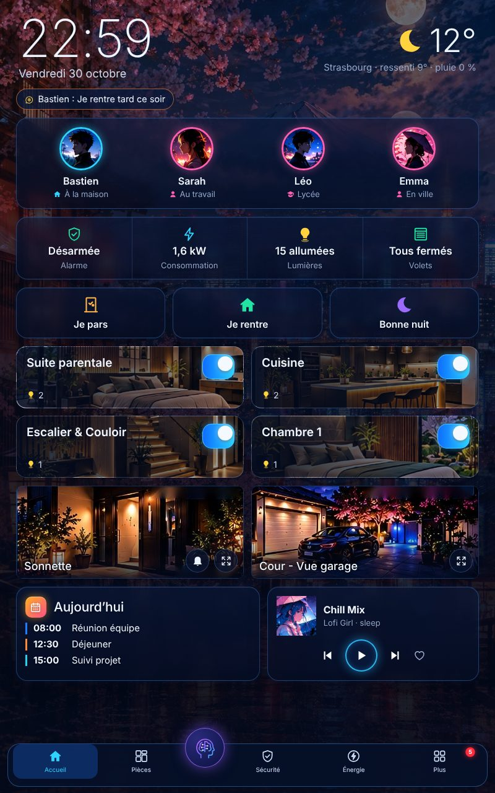
Tablette debout : heure, météo, famille, état de la maison, raccourcis, 4 pièces, 2 caméras, agenda, musique. Bêta IA au centre de la barre du bas.
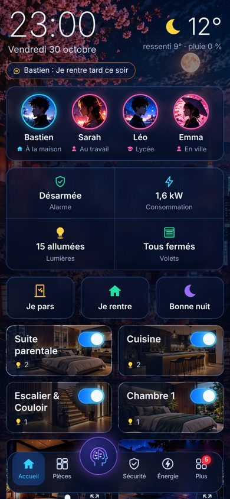
Le même accueil sur l'iPhone (la page défile).
Les 4 raccourcis sont ceux de la page Raccourcis de l'iPhone : on les règle une seule fois.
Les pièces et caméras affichées se choisissent par tablette : Paramètres › Cet écran › Accueil vertical.
Panneau mural d'une chambre (DotStarTech Wall Panel, 4″)
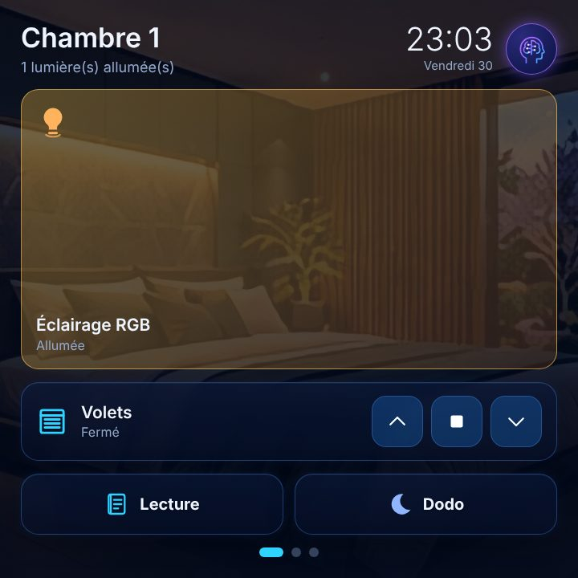
La pièce : lumières, volet, chauffage, 2 scènes. Appui long sur une lumière : intensité et couleur. Glisser : volet / missions.
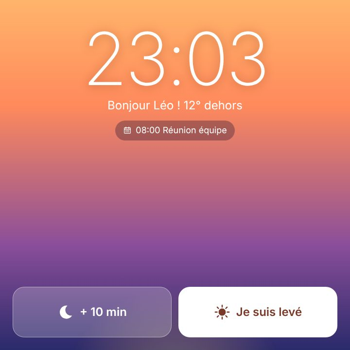
Réveil en douceur : « + 10 min » ou « Je suis levé » (le volet s'ouvre).
Sur le panneau (Raspberry Pi OS, navigateur Chromium en plein écran), ouvrez http://IP-du-NAS:8090/?panneau=chambre-1 (le nom de la pièce, sans accents ni espaces). Ajoutez &enfant=leo pour une chambre d'enfant.
Associez-le comme une tablette (QR code ou code). Il reste ensuite sur sa pièce, même après un redémarrage.
Pour en sortir : appui long (2-3 s) sur le nom de la pièce, puis le code d'un parent.
Sonnette sur le panneau
Quand elle s'affiche
Automatique (par défaut)
Seulement si quelqu'un est réveillé dans la pièce : une lumière allumée ou un volet ouvert. Lumière éteinte et volet fermé : rien.
Chambre d'enfant
Jamais.
Toujours / Jamais
Au choix dans Paramètres › Cet écran.
La nuit Aux heures de nuit de l'écran (22 h – 7 h par défaut), le panneau passe sur une horloge ambrée très sombre qui n'éclaire pas la chambre ; un appui ramène la pièce.
13L'iPhone : raccourcis, Siri, notifications
Sur iPhone, Bêta home s'ouvre sur « Raccourcis » : météo, état de la maison, routines.
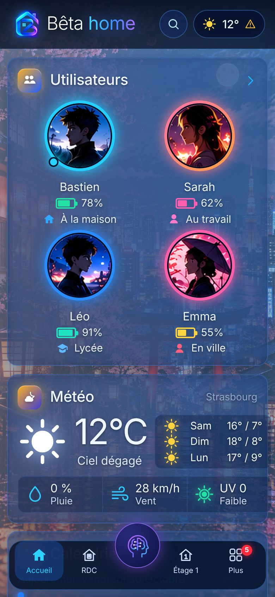
L'accueil en colonne, avec la barre d'onglets en bas.
Installer l'application
Dans Safari, ouvrez l'adresse de Bêta home (en https via Tailscale pour l'extérieur).
Bouton Partager › Sur l'écran d'accueil. L'icône Bêta home apparaît comme une vraie application.
Réglages › Écrans et iPhone › iPhone : Siri et widgets donne les raccourcis Siri prêts à ajouter (« Dis Siri, je pars »).
Notifications
Installez l'application ntfy sur chaque iPhone et abonnez-vous au sujet indiqué. Bouton Tester pour vérifier.
14Réglages : tout retrouver
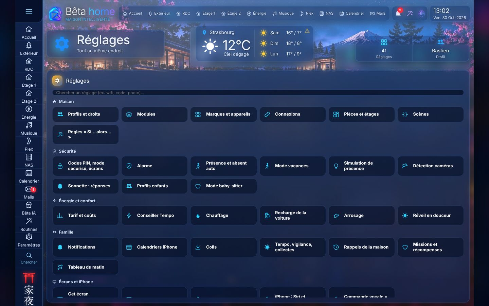
Le centre des réglages, rangé par thème, avec une recherche (« wifi », « alarme », « tempo »…).
Thème
Contenu
Maison
Profils et droits, Modules, Marques et appareils, Connexions, Pièces et étages, Scènes, Règles
Tarif et coûts, Conseiller Tempo, Chauffage, Recharge voiture, Arrosage, Réveil en douceur
Famille
Notifications, Calendriers iPhone, Colis, Tempo/vigilance/collectes, Rappels, Missions, Tableau du matin
Écrans et iPhone
Cet écran, Cadre photo, Interphone, Siri et widgets, Commande vocale « Bêta »
Réseau
Box et Wi-Fi, Wi-Fi invités
Système
Installation et diagnostic, Sauvegarde, Mises à jour, Administration, Santé de la maison
Droits Les réglages sont réservés aux administrateurs. En mode sécurisé, ils demandent en plus le code PIN d'un parent.
15Modules : activer seulement ce qui vous sert
Réglages › Maison › Modules : chaque fonction (chauffage, arrosage, alarme, missions, colis, calendriers, contrôle parental…) s'active ou se coupe indépendamment. Un module coupé disparaît des menus et le serveur ne l'exécute plus.
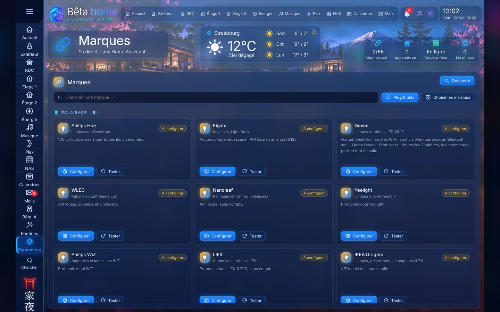
Marques et appareils : chaque marque se relie séparément (Bbox, Deco, Tapo, Zigbee2MQTT, Matter, caméras…).
Qui pilote quoi ? (éviter les conflits)
Plusieurs automatismes peuvent vouloir piloter le même appareil. Bêta home les arbitre ainsi :
Situation
Ce qui se passe
Un radiateur est dans une zone de chauffage et dans le décalage Tempo
Le chauffage garde la main ; le décalage l'ignore et le diagnostic le signale.
La prise de la borne est aussi dans le décalage Tempo
La recharge intelligente garde la main.
Une vanne d'arrosage est aussi dans le décalage
L'arrosage garde la main.
Une scène règle une lampe, l'éclairage adaptatif est actif
La scène gagne ; l'adaptatif ne retouche pas la lampe.
Mode vacances avec la simulation de présence coupée
La simulation n'est pas activée ; au retour, l'état d'avant est rétabli.
Ne pas déranger + sonnette / alarme / fuite
Ces trois-là passent toujours.
Sans Home Assistant Toutes les fonctions marchent avec des appareils reliés directement. Avec Home Assistant, ses appareils s'ajoutent simplement à la liste (Marques › Home Assistant).
16Sauvegarde et mises à jour
Sauvegarde chiffrée chaque nuit (mot de passe de sauvegarde), copie possible sur une clé USB du NAS, restauration en un clic.Mises à jour : avec Watchtower, la nouvelle version s'installe depuis Bêta home.
Mot de passe de sauvegarde Notez-le sur papier : sans lui, une sauvegarde chiffrée ne peut pas être restaurée.
17En cas de souci
Symptôme
Solution
« Serveur Bêta du NAS nécessaire »
Réglages › Maison › Connexions : adresse http://IP-du-NAS:8090 et clé (ou associez l'écran par QR).
Un appareil ne répond plus
Installation › Relancer : la ligne « Appareils » indique la marque en cause.
Les heures des règles sont décalées
Ajoutez TZ=Europe/Paris dans le docker-compose (le diagnostic le signale).
Cet écran › Mode performance ; vérifier que Fully Kiosk est utilisé.
Code PIN oublié
Un autre parent le change dans Réglages › Sécurité. Sinon, sur l'ordinateur, Connexions avec la clé du serveur (BETA_KEY) redonne l'accès administrateur.
NAS éteint ou injoignable
Mode secours automatique : une bannière le signale ; les listes et scènes restent sur l'écran, les appareils Home Assistant restent pilotables.
Internet coupé
Les lumières, l'alarme et les règles locales continuent ; une bannière l'indique sur les écrans.
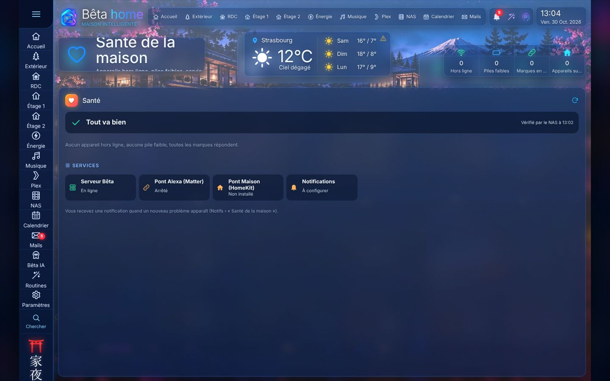
Santé de la maison : piles faibles, appareils muets, courbes de température.